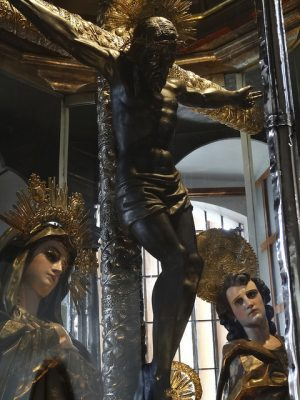
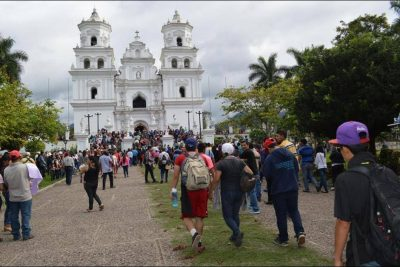

Según la tradición oral,
desde antes de la llegada de los españoles a Guatemala, Esquipulas era ya un lugar de peregrinación conocido en toda Mesoamérica en el que se rendía culto al dios guerrero Ek Chuaj.
Luego de la conquista, en el año de 1530 se inició una labor de evangelización en Esquipulas y así,
en el año de 1594 cuando el catolicismo ya estaba arraigado, los pobladores de la región utilizaron sus ganancias de la abundante cosecha de algodón para mandar a hacer una imagen de Jesús crucificado.
Fue entonces cuando se le encargó al escultor portugués Quirio Cataño que tallara dicha imagen.
El artista entregó su creación el 4 de octubre de 1594.Continúa la tradición oral afirmando que cuando los responsables de recoger la imagen en la ciudad de
Santiago de Guatemala iban en su viaje de regreso, quienes los observaban se quedaban admirados por la belleza de la misma y pedían que el crucificado
permaneciera con ellos por una noche, finalmente la imagen llegó a Esquipulas el 9 de marzo de 1595.
Existen versiones que afirman que el escultor utilizó madera oscura para esculpir la imagen y que se pareciera al tono de piel de los habitantes de Esquipulas,
sin embargo, durante una restauración realizada a la imagen se determinó que fueron los años de exposición al humo de veladoras los que le proporcionaron
su tono oscuro.

Fue de esa forma como se inició la tradición del peregrinaje para venerar a la imagen.
Con el tiempo, su adoración se ha expandido tanto que en la actualidad, el Cristo es venerado por fieles devotos de toda Centroamérica y regiones de México.
El 15 de enero es cuando llega la mayor cantidad de visitantes a la Basílica de Esquipulas, ya que la tradición de peregrinar es celebrada desde hace más de
400 años y sus devotos creen fielmente en los milagros realizados por el Cristo Negro.